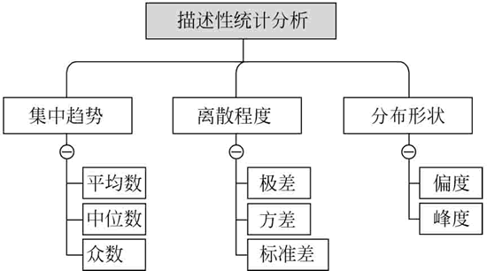
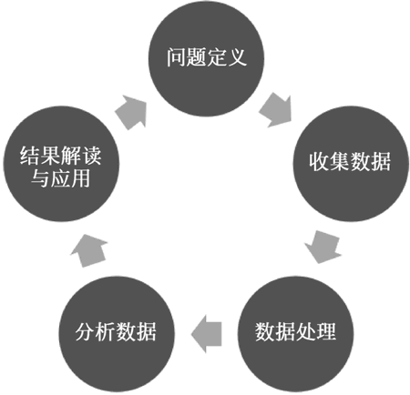

首页 > 编程笔记
数据分析是什么
顾名思义，数据分析就是数据（Data）加分析（Analysis）。
“数据”就是数值，也就是我们通过观察、实验或计算得出的结果。数据有很多种，最简单的就是数字，数据也可以是文字、图像、声音等。数据可以用于科学研究、设计、验证等。
“分析”就是将研究对象的整体分为各个部分、方面、因素和层次，并分别加以考察的认识活动。分析的意义在于细致地寻找能够解决问题的主线，并以此解决问题。
因此，数据分析就是：用适当的统计分析方法对收集来的大量数据进行分析，提取有用信息和形成结论，对数据加以详细研究和概括总结的过程。这一过程也是质量管理体系的支持过程。
在实际应用中，数据分析可帮助人们做出判断，以便采取适当行动。数据分析的数学基础在 20 世纪早期就已确立，但直到计算机的出现才使得实际操作成为可能，并使数据分析得以推广。
数据分析是数学与计算机科学相结合的产物。如果用一句话来定义数据分析，那么可以认为数据分析就是利用数据来理性思考和决策的过程。
以电商网站为例，企业需要了解新用户注册、用户复购、仓库备货、配送、营收等运营指标，提供这些指标来衡量公司的运营，用以说明当前业务是好还是坏，好的程度如何，坏的程度又如何。除了运营指标的监控，企业还需要了解各项业务的构成、业务的发展和变动情况等。针对“我是谁”的数据分析通常会以每天、每周、每月的报表形式来表现，有的时候企业还需要实时了解业务，如天猫“双十一”活动时，对销售额、订单、快递等的实时显示。
通过现状分析，我们对企业的当前运营情况有了基本了解，但为什么用户最近流失，营收却增加了？为何配送最近总是延迟？客户满意度为什么最近在下降？这就是数据分析要解决的第二个问题，寻找问题的原因。
一方面，我们通过对企业运营现状的了解来帮助企业对未来发展趋势做出预测，为制定企业运营目标及策略提供有效的参考与决策依据，以保证企业的可持续健康发展；另一方面，我们需要实时预测客户的行为，针对客户进行精准营销，推断客户将商品加入购物车后的下一步行为。
类似的预测还有很多，例如，国外有的银行根据求职网站的岗位数量推断就业率；美国疾病控制和预防中心依据网民搜索分析全球范围内流感等疾病的传播状况，这些都是对未知的预测。
例如，本月某类商品销售额是多少，客户平均订单价值是多少，客户留存率是多少。
例如，基于过去几年的时间序列销售数据预测明年的销售额；基于聚类分析、分类分析、逻辑回归等技术预测客户信用等级；基于关联分析预测不同商品组合可能产生的销售效果。
目前各类热门的大数据方面的统计应用，包括数据挖掘技术等，都可归类到预测性分析。
例如，采用数学模型确定最优的商品定价以实现利润最大化。再比如，应该怎样实现网页的最优广告位布局、生产企业最优的生产排程、最优的劳动力排班等。
通过统计处理可以简单地用几个统计值来表示一组数据的集中趋势、离散程度以及分布形状，如下图所示。
所谓参数估计，就是用样本统计量去估计总体的参数。
假设检验与参数估计类似，但角度不同，参数估计是利用样本信息推断未知的总体参数，而假设检验是对总体参数提出一个假设值，然后利用样本信息判断这一假设是否成立。
假设检验可分为：
而方差分析则是通过比较总体各种估计间的差异来检验方差的正态总体是否具有相同的均值，是检验多因素之间差异显著性的重要统计分析方法，常用的方差分析方法有单因子方差分析和双因子方差分析。
传统的统计分析方法常常先假设数据符合一种统计模型，然后依据数据样本来估计模型的一些参数及统计量，以此了解数据的特征，但实际中往往有很多数据并不符合假设的统计模型分布，导致数据分析结果不理想。探索性数据分析则是一种更加贴合实际情况的分析方法，它强调让数据自身“说话”，通过探索性数据分析可以真实、直接地观察到数据的结构和特征。
探索性数据分析出现之后，数据分析的过程就分为两个阶段：探索阶段和验证阶段。探索阶段侧重于发现数据中包含的模式或模型，验证阶段侧重于评估所发现的模式或模型，很多机器学习算法（分为训练和测试两步）都遵循这种思想。
当拿到一份数据时，如果做数据分析的目的不是非常明确、有针对性，可能会感到有些茫然，那么此刻就更加有必要进行探索性数据分析了，它能帮助我们初步了解数据的结构和特征，甚至发现一些模式或模型，再结合行业背景知识，也许就能直接得到一些有用的结论。
例如，公司通常会有用户数据、运营数据、销售数据等，我们需要利用这些数据来解决什么问题，得出什么结论。以下有一些例子：
问题的定义通常需要分析人员对业务有深入了解，这也是经常提到的数据思维。例如，要提高企业销售，那么需要理解企业盈利模式是什么；收入可以通过增加用户来提高，还是提高价格；又或者是公司不应该专注于销售额，而应该关注利润。
需要明确的是开始提出的问题只是出发点而非终点，很可能在针对问题进行了一系列研究后，我们会修改最初的问题定义。而如何更好地定义问题，这就需要我们通过不断练习来寻找对数据的感觉。
典型的数据获取方式有以下几种。
例如，可以根据需要提取某年所有的销售数据、提取今年销量最大的50件商品的数据、提取上海及广东地区用户的消费数据等。通过结构化查询语言（Structured Query Language，SQL）命令，我们可以快速完成这些工作。
与之对应，我国国务院也制定了《促进大数据发展行动纲要》，要求“2018年底前建成国家政府数据统一开放平台，率先在信用、交通、医疗、卫生、就业、社保、地理、文化、教育、科技、资源、农业、环境、安监、金融、质量、统计、气象、海洋、企业登记监管等重要领域实现公共数据资源合理适度向社会开放”，截至 2019 年，已经有 50 多个地市开放了平台，开放了约 15 个领域的数据，包括教育科技、民生服务、道路交通、健康卫生、资源环境、文化休闲、机构团体、公共安全、经济发展、农业农村、社会保障、劳动就业、企业服务、城市建设、地图服务。
例如，爬取淘宝上的商品信息；通过爬虫获取招聘网站某一职位的招聘信息；爬取租房网站上某城市的租房信息等。
值得一提的是，我们有时并不能够获得所有需要的数据，不过这并不重要，因为我们的目标是通过有限的可获取的数据，提取更多有用的信息。
数据处理的基本目的是从大量的、可能杂乱无章的、难以理解的数据中抽取并推导出对解决问题有价值、有意义的数据。如果数据本身存在错误，那么即使采用最先进的数据分析方法，得到的结果也是错误的，不具备任何参考价值，甚至还会误导决策。
数据处理主要包括数据清洗、数据转化、数据抽取、数据合并、数据计算等处理方法。一般的数据都需要进行一定的处理才能用于后续的数据分析工作，即使再“干净”的原始数据也需要先进行一定的处理才能使用。
现实世界中的数据大体上都是不完整、不一致的脏数据，无法直接进行数据分析，或分析结果不尽如人意。数据预处理有多种方法：数据清理、数据集成、数据变换、数据归约等。把这些影响分析的数据处理好，才能获得更加精确的分析结果。
以大众最近关心的空气质量数据为例，很可能其中有很多天的数据由于设备的原因是没有监测到的，有一些数据是记录重复的，还有一些数据是设备故障时监测无效的。那么需要用相应的方法去处理，如残缺数据，是直接去掉这条数据，还是用临近的值去补全，这些都是需要考虑的问题。
当然，在这里我们还可能会进行数据分组、基本描述统计量的计算、基本统计图形的绘制、数据取值的转换、数据的正态化处理等，通过这些操作掌握数据的分布特征，以帮助我们进一步深入分析和建模。
选择几种统计分析方法对数据进行探索性的反复分析也是极为重要的。每一种统计分析方法都有自己的特点和局限，因此，一般需要选择几种方法反复印证分析，仅依据一种分析方法的结果就断然下结论是不科学的。
例如，在一定条件下，发现销量和价格成正比关系，那么可以据此建立一个线性回归模型，如果发现价格和广告是非线性关系，可以先建立一个逻辑回归模型来进行分析。一般情况下，回归分析的方法可以满足很大一部分的分析需求，当然也可以了解一些数据挖掘的算法和特征提取的方法来优化自己的模型，获得更好的结果。
通过数据分析，隐藏在数据内部的关系和规律就会逐渐浮现出来，那么通过什么方式展现出这些关系和规律，才能一目了然呢？
一般情况下，数据是通过表格和图形的方式来呈现的，即用图表说话。常用的数据图表包括饼图、柱状图、条形图、折线图、散点图、雷达图等，当然可以对这些图表进一步整理加工，使之变为我们所需要的图形，如金字塔图、矩阵图、瀑布图、漏斗图、帕累托图等。多数情况下，人们更愿意接受图形这种数据展现方式，因为它能更加有效、直观地传递出分析师所要表达的观点。
首先，深入浅出的数据报告、言简意赅的数据结论将更有利于业务理解和接受。其次，在理解业务数据的基础上，推动业务落地实现数据建议。通常，从业务最重要、最紧急、最能产生效果的环节开始是个好方法，与此同时需要考虑到业务落地的客观环境，即好的数据结论需要具备客观落地条件。
最后，需要明确的是一个数据项目工作是循序渐进的过程，无论是数据分析项目还是数据产品项目，都需要数据分析师具备计划、领导、组织、控制的项目工作能力。
“数据”就是数值，也就是我们通过观察、实验或计算得出的结果。数据有很多种，最简单的就是数字，数据也可以是文字、图像、声音等。数据可以用于科学研究、设计、验证等。
“分析”就是将研究对象的整体分为各个部分、方面、因素和层次，并分别加以考察的认识活动。分析的意义在于细致地寻找能够解决问题的主线，并以此解决问题。
因此，数据分析就是：用适当的统计分析方法对收集来的大量数据进行分析，提取有用信息和形成结论，对数据加以详细研究和概括总结的过程。这一过程也是质量管理体系的支持过程。
在实际应用中，数据分析可帮助人们做出判断，以便采取适当行动。数据分析的数学基础在 20 世纪早期就已确立，但直到计算机的出现才使得实际操作成为可能，并使数据分析得以推广。
数据分析是数学与计算机科学相结合的产物。如果用一句话来定义数据分析，那么可以认为数据分析就是利用数据来理性思考和决策的过程。
数据分析的目标
孤立的数据没有任何意义，唯有将其放到实际业务中才能产生价值，那么我们具体用数据分析来干什么呢？正如哲学有 3 个终极问题：我是谁？我从哪里来？我要到哪里去？与之对应，数据分析的目标也是回答这三大问题。1、我是谁：过去发生了什么
如果你不知道自己在哪里，那么给你一张地图也没有任何意义。对企业而言，首要的任务就是了解过去发生了什么。以电商网站为例，企业需要了解新用户注册、用户复购、仓库备货、配送、营收等运营指标，提供这些指标来衡量公司的运营，用以说明当前业务是好还是坏，好的程度如何，坏的程度又如何。除了运营指标的监控，企业还需要了解各项业务的构成、业务的发展和变动情况等。针对“我是谁”的数据分析通常会以每天、每周、每月的报表形式来表现，有的时候企业还需要实时了解业务，如天猫“双十一”活动时，对销售额、订单、快递等的实时显示。
2、我从哪里来：归因
“我是谁”的问题，解决了现状问题，那么“我从哪里来”就需要解决问题的归因，即为什么会这样。通过现状分析，我们对企业的当前运营情况有了基本了解，但为什么用户最近流失，营收却增加了？为何配送最近总是延迟？客户满意度为什么最近在下降？这就是数据分析要解决的第二个问题，寻找问题的原因。
3、我要到哪里去：预测
“我要到哪里去”，简单来说就是告诉我们将来会发生什么。一方面，我们通过对企业运营现状的了解来帮助企业对未来发展趋势做出预测，为制定企业运营目标及策略提供有效的参考与决策依据，以保证企业的可持续健康发展；另一方面，我们需要实时预测客户的行为，针对客户进行精准营销，推断客户将商品加入购物车后的下一步行为。
类似的预测还有很多，例如，国外有的银行根据求职网站的岗位数量推断就业率；美国疾病控制和预防中心依据网民搜索分析全球范围内流感等疾病的传播状况，这些都是对未知的预测。
数据分析分类
典型的数据分析或商业分析（Business Analytics）分为以下3类：- 描述性分析（Descriptive Analytics）：已经发生了什么？
- 预测性分析（Predictive Analytics）：将发生什么？
- 指导性分析（Prescriptive Analytics）：应该怎么办？
1、描述性分析
描述性分析是传统数据分析的主要应用领域，使用的技术主要有基于数据仓库的报表、多维联机分析处理等，通过各种查询了解业务中发生了什么，寻找数据中的存在模式。例如，本月某类商品销售额是多少，客户平均订单价值是多少，客户留存率是多少。
2、预测性分析
预测性分析主要是基于大数据（实际上也可以基于传统的数据仓库和数据库），采用各种统计方法以及数据挖掘技术预测业务中各个方面将要发生什么。例如，基于过去几年的时间序列销售数据预测明年的销售额；基于聚类分析、分类分析、逻辑回归等技术预测客户信用等级；基于关联分析预测不同商品组合可能产生的销售效果。
目前各类热门的大数据方面的统计应用，包括数据挖掘技术等，都可归类到预测性分析。
3、指导性分析
指导性分析会告诉用户应该做什么以得到最优的结果，主要指采用运筹科学的方法，即运用数学模型或智能优化算法，对企业应该采取的最优行动给出建议。例如，采用数学模型确定最优的商品定价以实现利润最大化。再比如，应该怎样实现网页的最优广告位布局、生产企业最优的生产排程、最优的劳动力排班等。
典型的数据分析方法
数据分析与统计分析密不可分，从统计学角度，典型的数据分析方法可以分为以下几类。- 描述性统计分析：应用统计特征、统计表、统计图等方法，对资料的数量特征及其分布规律进行测定和描述。
- 验证性统计分析：侧重于对已有的假设或模型进行验证。
- 探索性数据分析：主动在数据之中发现新的特征或有用的隐藏信息。
1、描述性统计分析
描述性统计分析是用来概括、表述事物整体状况以及事物间关联、类属关系的统计方法。通过统计处理可以简单地用几个统计值来表示一组数据的集中趋势、离散程度以及分布形状，如下图所示。

图 1 描述性统计分析
图 1 描述性统计分析
2、验证性统计分析
验证性统计分析是对数据模型和研究假设的验证，参数估计、假设检验以及方差分析是验证性统计分析中常用的方法。所谓参数估计，就是用样本统计量去估计总体的参数。
假设检验与参数估计类似，但角度不同，参数估计是利用样本信息推断未知的总体参数，而假设检验是对总体参数提出一个假设值，然后利用样本信息判断这一假设是否成立。
假设检验可分为：
- 单样本假设检验；
- 双样本的均值比较假设检验；
- 成对样本的均值比较假设检验。
而方差分析则是通过比较总体各种估计间的差异来检验方差的正态总体是否具有相同的均值，是检验多因素之间差异显著性的重要统计分析方法，常用的方差分析方法有单因子方差分析和双因子方差分析。
3、探索性数据分析
探索性数据分析（Exploratory Data Analysis，EDA）是指对已有数据在尽量少的先验假设下通过作图、制表、方程拟合、计算特征量等手段探索数据的结构和规律的一种数据分析方法，该方法在 20 世纪 70 年代由美国统计学家 J.K.Tukey 提出。传统的统计分析方法常常先假设数据符合一种统计模型，然后依据数据样本来估计模型的一些参数及统计量，以此了解数据的特征，但实际中往往有很多数据并不符合假设的统计模型分布，导致数据分析结果不理想。探索性数据分析则是一种更加贴合实际情况的分析方法，它强调让数据自身“说话”，通过探索性数据分析可以真实、直接地观察到数据的结构和特征。
探索性数据分析出现之后，数据分析的过程就分为两个阶段：探索阶段和验证阶段。探索阶段侧重于发现数据中包含的模式或模型，验证阶段侧重于评估所发现的模式或模型，很多机器学习算法（分为训练和测试两步）都遵循这种思想。
当拿到一份数据时，如果做数据分析的目的不是非常明确、有针对性，可能会感到有些茫然，那么此刻就更加有必要进行探索性数据分析了，它能帮助我们初步了解数据的结构和特征，甚至发现一些模式或模型，再结合行业背景知识，也许就能直接得到一些有用的结论。
数据分析的基本流程
一个完整的数据分析项目可以分为 5 步，如图下所示：

图 2 数据分析流程
图 2 数据分析流程
1、问题定义
企业或组织中的数据分析必须从正确的问题开始，而该问题必须清晰、简洁，同时要可度量。我们的目标是通过提出问题来帮助寻找新的解决方案，或者说解决特定问题。例如，公司通常会有用户数据、运营数据、销售数据等，我们需要利用这些数据来解决什么问题，得出什么结论。以下有一些例子：
- 某移动应用的新用户注册率趋势如何？
- 某游戏的玩家用户画像是如何的？
- 经常购买电商网站某品类的是哪类人群？
- 如何提高企业的销售额？
- 如何对用户画像，如何进行精准营销？
问题的定义通常需要分析人员对业务有深入了解，这也是经常提到的数据思维。例如，要提高企业销售，那么需要理解企业盈利模式是什么；收入可以通过增加用户来提高，还是提高价格；又或者是公司不应该专注于销售额，而应该关注利润。
需要明确的是开始提出的问题只是出发点而非终点，很可能在针对问题进行了一系列研究后，我们会修改最初的问题定义。而如何更好地定义问题，这就需要我们通过不断练习来寻找对数据的感觉。
2、收集数据
有了具体的问题，就需要准备获取相关的数据了。首先需要明确，问题对应的数据是什么，这些数据如何定义，如何度量。之后就需要考虑哪些数据是已经存在的，哪些数据需要通过对现有数据进行加工来获得，哪些数据还没有。典型的数据获取方式有以下几种。
1) 企业数据库/数据仓库
大多数公司的销售、用户数据都可以直接从企业数据库获取。例如，可以根据需要提取某年所有的销售数据、提取今年销量最大的50件商品的数据、提取上海及广东地区用户的消费数据等。通过结构化查询语言（Structured Query Language，SQL）命令，我们可以快速完成这些工作。
2) 外部公开数据集
一些科研机构、企业、政府都会开放一些数据。开放政府数据更是成为近年的热潮，典型的有 2018 年 12 月 21 日，美国众议院投票决定启用“H.R. 4174”（Foundations for Evidence-Based Policymaking Act of 2017）。首先，这项《公共、公开、电子与必要性政府数据法案》（又称《开放政府数据法案》）要求政府信息应以机器可读的格式，默认向公众开放数据，且此类出版物不会损害隐私或安全；其次，联邦机构在制定公共政策时，应循证使用。与之对应，我国国务院也制定了《促进大数据发展行动纲要》，要求“2018年底前建成国家政府数据统一开放平台，率先在信用、交通、医疗、卫生、就业、社保、地理、文化、教育、科技、资源、农业、环境、安监、金融、质量、统计、气象、海洋、企业登记监管等重要领域实现公共数据资源合理适度向社会开放”，截至 2019 年，已经有 50 多个地市开放了平台，开放了约 15 个领域的数据，包括教育科技、民生服务、道路交通、健康卫生、资源环境、文化休闲、机构团体、公共安全、经济发展、农业农村、社会保障、劳动就业、企业服务、城市建设、地图服务。
3) 爬虫
利用爬虫去收集互联网上的数据是经常会采用的数据获取方式。例如，爬取淘宝上的商品信息；通过爬虫获取招聘网站某一职位的招聘信息；爬取租房网站上某城市的租房信息等。
4) 实验
如果想要判断新的应用界面是否会提高用户转化率，那么可以通过实验方式来获取，这其实就是我们熟悉的 A/B 测试。针对不同的问题可以设计各种不同的实验来获取相应的数据。值得一提的是，我们有时并不能够获得所有需要的数据，不过这并不重要，因为我们的目标是通过有限的可获取的数据，提取更多有用的信息。
3、数据处理
数据处理是指对采集到的数据进行加工整理，形成适合数据分析的样式，保证数据的一致性和有效性。它是数据分析前必不可少的阶段。数据处理的基本目的是从大量的、可能杂乱无章的、难以理解的数据中抽取并推导出对解决问题有价值、有意义的数据。如果数据本身存在错误，那么即使采用最先进的数据分析方法，得到的结果也是错误的，不具备任何参考价值，甚至还会误导决策。
数据处理主要包括数据清洗、数据转化、数据抽取、数据合并、数据计算等处理方法。一般的数据都需要进行一定的处理才能用于后续的数据分析工作，即使再“干净”的原始数据也需要先进行一定的处理才能使用。
现实世界中的数据大体上都是不完整、不一致的脏数据，无法直接进行数据分析，或分析结果不尽如人意。数据预处理有多种方法：数据清理、数据集成、数据变换、数据归约等。把这些影响分析的数据处理好，才能获得更加精确的分析结果。
以大众最近关心的空气质量数据为例，很可能其中有很多天的数据由于设备的原因是没有监测到的，有一些数据是记录重复的，还有一些数据是设备故障时监测无效的。那么需要用相应的方法去处理，如残缺数据，是直接去掉这条数据，还是用临近的值去补全，这些都是需要考虑的问题。
当然，在这里我们还可能会进行数据分组、基本描述统计量的计算、基本统计图形的绘制、数据取值的转换、数据的正态化处理等，通过这些操作掌握数据的分布特征，以帮助我们进一步深入分析和建模。
4、数据分析
进入数据分析阶段，需要了解不同方法适用的场景和问题。分析时应切忌滥用和误用统计分析方法。滥用和误用统计分析方法主要是由于对方法能解决哪类问题、方法适用的前提、方法对数据的要求等不清造成的。选择几种统计分析方法对数据进行探索性的反复分析也是极为重要的。每一种统计分析方法都有自己的特点和局限，因此，一般需要选择几种方法反复印证分析，仅依据一种分析方法的结果就断然下结论是不科学的。
例如，在一定条件下，发现销量和价格成正比关系，那么可以据此建立一个线性回归模型，如果发现价格和广告是非线性关系，可以先建立一个逻辑回归模型来进行分析。一般情况下，回归分析的方法可以满足很大一部分的分析需求，当然也可以了解一些数据挖掘的算法和特征提取的方法来优化自己的模型，获得更好的结果。
通过数据分析，隐藏在数据内部的关系和规律就会逐渐浮现出来，那么通过什么方式展现出这些关系和规律，才能一目了然呢？
一般情况下，数据是通过表格和图形的方式来呈现的，即用图表说话。常用的数据图表包括饼图、柱状图、条形图、折线图、散点图、雷达图等，当然可以对这些图表进一步整理加工，使之变为我们所需要的图形，如金字塔图、矩阵图、瀑布图、漏斗图、帕累托图等。多数情况下，人们更愿意接受图形这种数据展现方式，因为它能更加有效、直观地传递出分析师所要表达的观点。
5、结果解读与应用
数据分析的结果需要以报告的形式展现，数据分析师如何把数据观点展示出来则至关重要。这一过程需要数据分析师的数据沟通能力、业务推动能力和项目工作能力。首先，深入浅出的数据报告、言简意赅的数据结论将更有利于业务理解和接受。其次，在理解业务数据的基础上，推动业务落地实现数据建议。通常，从业务最重要、最紧急、最能产生效果的环节开始是个好方法，与此同时需要考虑到业务落地的客观环境，即好的数据结论需要具备客观落地条件。
最后，需要明确的是一个数据项目工作是循序渐进的过程，无论是数据分析项目还是数据产品项目，都需要数据分析师具备计划、领导、组织、控制的项目工作能力。
关注公众号「站长严长生」，在手机上阅读所有教程，随时随地都能学习。内含一款搜索神器，免费下载全网书籍和视频。

微信扫码关注公众号